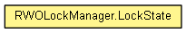

org.eclipse.net4j.util.concurrent
Class RWOLockManager.LockState<OBJECT,CONTEXT>
java.lang.Object
 org.eclipse.net4j.util.concurrent.RWOLockManager.LockState<OBJECT,CONTEXT>
org.eclipse.net4j.util.concurrent.RWOLockManager.LockState<OBJECT,CONTEXT>
- Enclosing class:
- RWOLockManager<OBJECT,CONTEXT>
public static class RWOLockManager.LockState<OBJECT,CONTEXT>
- extends Object

Represents a combination of locks for one OBJECT. The different lock types are represented by the values of the
enum IRWLockManager.LockType
The locking semantics established by this class are as follows:
a read lock prevents a write lock by another, but allows read locks by others and allows a write option by
another, and is therefore non-exclusive
a write lock prevents read locks by others, a write lock by another, and a write option by another, and is
therefore exclusive
a write option prevents write locks by others and a write option by another, but allows read locks by others,
and is therefore exclusive
- Since:
- 3.2
getLockedObject
public OBJECT getLockedObject()
hasLock
public boolean hasLock(IRWLockManager.LockType type,
CONTEXT view,
boolean byOthers)
hasLock
public boolean hasLock(IRWLockManager.LockType type)
toString
public String toString()
- Overrides:
toString in class Object
getReadLockOwners
public Set<CONTEXT> getReadLockOwners()
getWriteLockOwner
public CONTEXT getWriteLockOwner()
getWriteOptionOwner
public CONTEXT getWriteOptionOwner()
Copyright (c) 2004 - 2011 Eike Stepper (Berlin, Germany) and others.